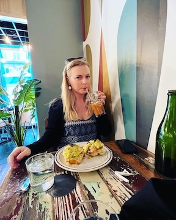

Hello! My name is Abby Mahfood and this webpage is for BU MET CS601. I grew up in central Florida and received by Bachelor's of Science in Computer Science Engineering from the University of Florida (Go Gators!). After graduating, I started working full time as a Software Engineer for L3 Harris Technologies. After six years of software development including embedded software applications, console applications, and ASP.NET Core web applications, I decided it was time for a change of pace. I currently work as a Senior Software Engineer for Capital One. At Capital One, I work mostly with node.js and Amazon Web Services. I am currently pursing my Master's Degree in Software Development from Boston University's Metropolitan College I have a few hobbies including exercising, cooking/baking, playing video games, reading, and taking care of my pets. I also enjoy traveling and have had the opportunity to travel to Colorado, New York, and Georgia this year. Below is a picture of me enjoying iced coffee in Savannah, Georgia and a video of me kayaking in upstate New York!
I am studying Software Development at Boston University's Metropolitan College. I have completed 3 courses so far. I am currently taking Web Application Development with Professor Looper. Web development was the reason I decided to pursue my Masters. I started working on an ASP.NET Core web application while working at L3 Harris Technologies. There weren't many experienced web developers at the company so I figured getting a formal education in the subject matter couldn't hurt. Below you will see my current progress and possible classes for the future.
| Course Number | Course Description | Term Completed | Professor | Type |
|---|---|---|---|---|
| MET CS 521 | Info Structures with Python | Spring 1 2022 | Lu | Required |
| MET CS 526 | Data Structures and Algorithms | Spring 2 2022 | Raghu | Required |
| MET CS 673 | Software Engineering | Fall 1 2022 | Raghu | Required |
| MET CS 601 | Web Application Development | Fall 2 2022 (In Progress) | Looper | Elective |
| Course Number | Course Description | Possible Term | Professor | Type |
|---|---|---|---|---|
| MET CS 622 | Advanced Programming Techniques | Spring 1 2023 | Rawassizadeh | Required |
| MET CS 665 | Software Design and Patterns | Spring 2 2023 | Kalathur | Required |
| MET CS 602 | Server-Side Web Development | Spring 1 2023 | Orsini | Elective |
| MET CS 701 | Rich Internet Application Dev | Spring 2 2023 | Winderbaum | Elective |